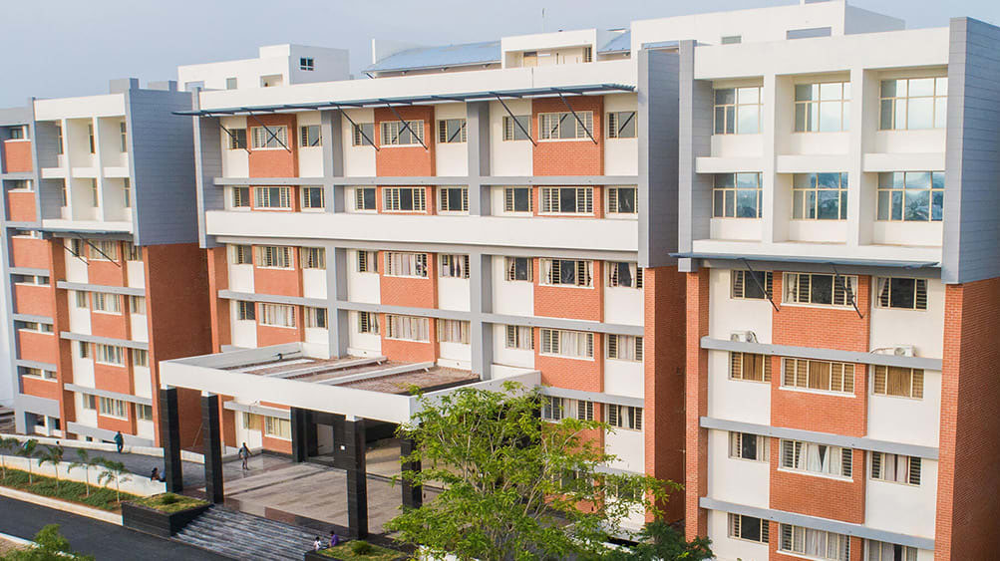
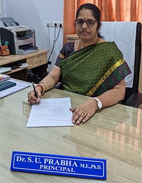

To empower the students for succeeding in a changing world to become productive engineers and responsible citizens.
The stated vision of the institution will be achieved by:
Education is the basic foundation of a good society. The onus of imparting quality education through intuitions bestowed with research potential, lies on educators who take their responsibilities seriously. For the Kovai Medical Center Research and Educational Trust, the starting of an Engineering Institution is definitely a commendable issue. Having several educational institutions under its banner, the establishment of Dr. N.G.P Institute of Technology, was with the determination of providing technical education, with a host of facilities on par with any of the best institutions in India.
This Institution strives to nurture technocrats who can keep step with changes taking place around them. For achieving this, the Management will take all concerted effort to provide the latest technical and research facilities, lab facilities, infrastructural facilities and create the right ambience required for innovative work, training and practice. The Institution will partner with research experts in the various branches of engineering and technology, in an attempt to give the students the required exposure to the latest know-how.
Dr. N.G.P Institute of Technology will constantly work towards upgradation of teaching quality and technical facilities to ensure a pride of place for it among the best institutions in the country.
Apart from the Health Care and Educational Activities, he is carrying out many community services to the rural and needy people. As a part of his service, the KMCH has set up 6 community rural and women centers to serve the poor and needy with association of Rotary clubs, St. John service organizations, KMCH has established trauma and First aid center at Kunnathur, Coimbatore district, Palla Goundanpalayam, Perundurai and Erode. While in USA, as a Director of Tamilnadu Foundation, started the Rural Health and sanitation program for Tamilnadu. Established a model sanitary program at Naduvalasu – Nallampatti village in Erode District. To train the villagers to familiar with sanitation habit, established model latrines and model education program to use foot wares and educating clean habits among the villagers. He has donated computers to Government schools and built toilets at Board high school Perundurai and schools in Erode and Coimbatore district (Thadagam area). Scholarships and award to students of schools at Nallampatti and Perundurai since 1977. Many students are given free education and scholarships in his educational institutions. Helped to renovate temples especially for Dalit people in Nallampatti and Thadagam villages. Notable works were done in Anuvavi Subramanian temple and Maruthamalai Murugan Temple. He is recipient of many awards from medical, educational and community organization for his services. His mission is to serve the people of India in Health Care and Education on par with developed countries in the world.
India is a unique nation that can boast of having one of the largest youth population in the world. A nation's wealth and strength are its youth and on those terms India is rich and strong. How the strength and skills of the youth are channelized is of great importance. The youngsters of today are at an advantage because they live in an era of great development especially in the areas of science and technology.
The scope and application of technical education is an issue of primary importance. In an age when most things can he engineered, educators need to give thought to the outcome of the finished product. In other words 'The Student'. Thus an institution needs to be engineered to meet the expectations of several - that of the student, the parents, the industry into which the candidate will be absorbed, and finally the society worldwide.
This institution, Dr. N.G.P Institute of Technology which was formally established in September 2007 was set up with a determination of playing a very distinct role in shaping the destinies of the students who will be able to meet the requirements of a demanding and competitive world.
In order to forge the foundation and improve our human capital both qualitatively and quantitatively, appropriate educational training is offered by us to cover the entire spectrum of leaning. Since knowledge is the growth-driver in today's globalized world, we uphold the highest standards when imparting knowledge and integrating generic skills. This we achieve through our highly dedicated team of teaching staff, technical staff, administrative staff and non-teaching staff. Students these days not only need Practice skills but also need to be equipped to stand out among others. It is that cutting-edge quality that we tirelessly strive to maintain.
Studies alone do not help mould one's character. It is the institution, its location, its facilities and ambience that aid in the overall character development of a student. In our institution we emphasize on integrity and cultural sensitivity. Here, we shape an individual's ethical values. We do our sincere part in contributing to the evolution of National building. To know and experience this one needs to be a part of this Institution.
 Dr. S. U. Prabha received her Ph.D degree in 2010 from Faculty of Engineering and Technology, Multimedia University, Malaysia. She received her M.E degree in Electrical Machines from PSG College of Technology, Bharathiyar University, Coimbatore in the year 1997, and her B.E degree in Electrical & Electronics Engineering from Coimbatore Institute of Technology, Bharathiyar University, Coimbatore in the year 1993.
She possesses 27 years of teaching experience and around two decades of research experience. She is also having 10 years of International experience in teaching and research. Currently she is the Head of the Institution at Dr.N.G.P. Institute of Technology, Coimbatore. Her main research interests are power system analysis, power system optimization, power system stability, power quality issues and Renewable Energy Resources. She has published her research work in many international journals and international conferences.
She has received funding to the tune of 50 Lakhs from various funding agencies like UGC, AICTE, MNRE, ISTE, IEEE, etc. She is having 2 Copyrights and 4 patents. She has visited countries like Malaysia, Singapore, Thailand and Indonesia for academic and research purposes. She is a recognized research supervisor of Anna University, Chennai. Under her guidance she has produced 7 Ph.Ds and presently she is supervising 7 Ph.D scholars.
She has published around 120 International Journals and International Conferences to her credit. She is constantly acting as a Keynote speaker and reviewer in various International Conferences. She is also a reviewer in renowned international journals. She is passionate in organizing various events like Faculty Development Programs, Seminars, workshops, Conferences, etc for the benefit of the Faculty and Student community.
She is a certified Resource Person of National Board of Accreditation, New Delhi and has conducted many workshops and guest lectures on “Outcome Based Education and Outcome Based Accreditation”. She is also a certified Auditor of National Board of Accreditation and helps many institutions to face the NBA Committee by conducting Mock Audits and providing suggestions for improvements.
She is well versed in the accreditation process of NAAC and has grabbed funding from UGC under the scheme PARAMARSH for handholding and mentoring the institutions aspiring for NAAC Accreditation. She is a Senior Member of IEEE and Life member of ISTE. She is the recipient of the following awards.
The role of manufacturing in the country’s economy and societal development has long been established through their wealth generating capabilities. To enhance and widen our knowledge of materials and to increase innovation and responsiveness to ever-increasing international needs, more in-depth studies of functionally graded materials/ tailor- made materials, recent advancements in manufacturing processes and new design philosophies are needed at present. The objective of this conference is to bring together experts from academic institutions, industries and research organizations and professional engineers for sharing of knowledge, expertise and experience in the emerging trends related to design, advanced materials processing and characterization, advanced manufacturing processes.
The conference is structured with plenary lectures followed by parallel sessions. The plenary lectures introduces the theme of the conference delivered by eminent personalities of international repute Each parallel session starts with an invited talk on specific topic followed by contributed papers. Papers are invited from the prospective authors from industries, academic institutions and R&D organizations and from professional engineers. This conference brings academicians, industrial experts, researchers, and scholars together from areas of Mechanical Design Engineering, Materials Engineering and Manufacturing Processes. The topics of interest includes Design, Materials and Manufacturing engineering and other related areas such as Mechatronics, Prosthetic design and Bioinspired design and Smart materials. This conference will provide you a platform for learning, exchange of ideas and networking with fellow colleagues and participants across the globe in the field of Mechanical Design, Materials and Manufacture.
This conference ICDMME 2021 will pave way to understand the latest technological and innovative advancements especially in the fields of manufacturing, design and materials engineering. The conference will develop solutions to physical problems, questions how things work, make things work better, and create ideas for doing things in new and different ways in the manufacturing, design and materials engineering. The conference focuses on the frontier themes of recent advances in manufacturing, design and materials engineering, as applied to multiple disciplines of engineering. Researchers, Academicians, Industrialist and Students will be benefitted with the latest trends and developments in design, manufacturing and materials engineering applied to various disciplines of engineering. The objective of the conference is to have the orientation of research and practice of professionals towards attaining global supremacy in manufacturing, design and materials engineering. Also this conference aims in understanding the recent trends in manufacturing, design and materials engineering including optimization and innovation. This conference ICDMME 2021 also aims in improving Research culture in the minds of faculty in exploring the knowledge base, establishing better insights and maintaining dynamism in the teaching - learning process